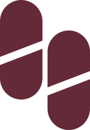
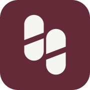

Approved change order
CO-03 · $8,000
Source date · 28 Sep 2026
DEMO · CO-03-v1 · line 04 · fictional approval recorded by Owen Hale, 28 Sep 2026. Does not authorize payment.
 Brand & motion / v1.0
Brand & motion / v1.0
A considered identity for DrawPacket.
Editorial rhythm. Precise evidence. Human review.
An interactive brand kit and page-motion study. DrawPacket is a research-stage concept. Every product record shown here is synthetic; this is not an operating payment product.
The selected option 06, Cadence, redrawn as editable vector paths. Two offset forms share one diagonal cut: a visual expression of documents arriving at different times, then finding a common review rhythm.
PRIMARY LOCKUP / OXBLOOD + INK
REVERSE
Clear space: at least half the width of one capsule on every side. Primary lockup: 128 px minimum recommended. Symbol: 16 px optical version; 24 px and larger standard version. Review small raster output on its actual surface.
Symbol master: 178 × 256 units. Capsule width 84; column offset 94; vertical offset 60. Keep cut angle, gap, and capsule proportions unchanged. Source Serif 4 Bold forms the outlined wordmark.
Oxblood or ink on pale surfaces; chalk/white on wine and oxblood. Keep the logo away from busy diagrams. Use the mark once per visual group.
No rotation, stretched lettering, gradient fills, metallic effects, container badges, or auto-looping logo. The site’s diagrams move; the core identity remains stable. Brand and trademark clearance are outside this design kit.
Chalk is the dominant canvas. Oxblood carries the brand. Lilac introduces evidence and editorial pauses. Secondary surfaces change the atmosphere by chapter without changing the product’s meaning. Select a swatch to copy its value.
| Pair / use | Contrast | Rule |
|---|
Aim for roughly 65% chalk/white, 20% alternate pale surfaces, 10% ink typography, and 5% oxblood emphasis. These are composition guides, not coverage targets.
! HOLD / REVIEW REQUIRED
Amber pairs with a written hold reason and icon. Green means a reviewer-recorded state only. Decorative motion never changes a status to approved.
Reserve wine or oxblood for human-control boundaries and the reviewed workflow. Use chalk text and lilac linework. Don’t put muted dark text on these surfaces.
Bodoni Moda brings contrast and distinctive proportions to short headlines. DM Sans keeps explanations and controls clear. IBM Plex Mono gives IDs and amounts a stable rhythm. All four font families are bundled with their open-font licenses.
Make one GC draw ready with visible holds and waiver evidence.
Keep the evidence beside the exception. Name the reviewer. Show the next action.
BP-04 / PA-07
$84,000 − $78,000 = $6,000
Source Serif 4 is reserved for the logo. Avoid introducing a second serif into routine page content.
| DISPLAY | Bring the month into focus. | 48–104 px / 0.98 500 / −0.045em |
| H1 / PAGE | Every source in view. | 44–80 px / 1.04 500 / −0.045em |
| H2 / CHAPTER | Review what changed. | 36–56 px / 1.06 500 / −0.04em |
| H3 / COMPONENT | Evidence requiring review | 24 px / 1.25 / 500 |
| LEAD | One project. One monthly cycle. | 20 px / 1.5 / 400 |
| BODY | Sources stay linked to the line they support. | 16 px / 1.6 / 400 |
| DATA | PA-07 · $84,000 · 05 OCT | 14 px / 1.5 / 400 |
| CAPTION | Synthetic example. Source version 02. | 13 px / 1.45 / 400 |
| EYEBROW | DRAW READINESS / 03 | 11 px / 1.5 / .14em |
Use sentence case. Keep long reading copy at 55–75 characters per line. Use tabular figures for numerical comparisons; right-align amounts in tables. Avoid thin serif weights, justified text, and body text over photographic detail.
A 4 px base scales into generous editorial spacing. Headlines, body copy, and source labels share a clear left edge. Product figures align on a separate right edge. Each section gets a distinct composition within the same grid.
12 columns · 24 px gaps
48 px page gutters
1280 px content maximum
96–128 px section spacing
8 columns · 24 px gaps
32 px page gutters
72–96 px section spacing
Stack complex diagrams before labels shrink
4 columns · 16 px gaps
20 px page gutters
56–64 px section spacing
44 px minimum interactive targets
2 px crisp labels, 4 px controls and operational cards, 8 px larger preview panels. Pills only for short statuses and metadata. Cadence arches belong to decorative compositions, never form fields. Rules: 1 px; hierarchy comes from placement and color, not heavy shadows.
Alternate split editorial, full-width register, asymmetric evidence rail, horizontal numbered process, tiered network, and quiet closing CTA. Change one or two elements per section—surface, composition, or illustration scale—to preserve coherence.
A finite interaction vocabulary. Hover or focus each example; tap to preview on touch. Primary actions use a wipe or arrow exchange. Reserve flip and shutter for editorial CTAs. The action’s accessible name stays constant.
48 px standard height · 24 px horizontal padding · 4 px radius. Disabled actions explain why. Loading reports progress without implying a real submission.
CO-03 · $8,000
Source date · 28 Sep 2026
Expires 08 Oct. Intended review: 10 Oct. Renewal evidence is pending.
See the missing evidence across identified subcontractor tiers.
Exception, source, owner, and dated next action in one view.
Named approver: Owen Hale.
Current state: pending.
Indexed sources and unresolved exceptions. No payment release or signing.
All cards show DEMO content. Source reveal is click/keyboard accessible; essential details never rely on hover. Don’t use decorative flips on approval, signing, destructive, or payment-related controls.
A curated 24 px outline system for the website and demo. Keep a 1.6 px stroke, round joins, and an optical 20–24 px footprint. Label unfamiliar actions. Social marks retain their own brand geometry and approved colors.
Outline UI icons adapted from Tabler under MIT; source licenses included. No third-party logo morphing or hover recoloring. Use an external-link indicator next to social labels. Footer links should be added only when DrawPacket’s real profiles exist.
Eight lightweight vector textures and three original generated background images. Leave the left third quiet for text. These abstract material studies convey sequence and layers without portraying a customer, project, or shipped product.
About, brand story, closing CTA. Crop toward the right; text stays on a solid chalk field.
Download WebP ↗Resources and request-demo introductions. Use as a backdrop to a static title; evidence text belongs in HTML.
Download WebP ↗Controls and workflow chapters. Chalk text, lilac linework. No lens flares or pulsing glows.
Download WebP ↗
Original vector figure / finite line-draw sequence. Download animated SVG ↗
One finite 2.8 s reveal: foreground image translates up 16 px while its mask opens; title enters first, supporting caption second. Keep a fully visible poster as the reduced-motion and slow-device fallback. Avoid continuous Ken Burns movement behind reading text.
Use one pattern per section at 3–8% visual opacity. Never layer a grid, noise, illustration, and photograph in the same area. Crop background imagery with object-position: 70% center; on mobile use a separate visual block below copy.
Each IA route has a headline, palette, texture, vector hero, sequence, and section plan. Select a page to replay its scene. These are brand and hero studies, not 27 finished website pages. Live SVG sequences run once and settle.
Focus remains instant. Hover color, 4–6 px icon travel, underline growth. Use one dominant effect per control. Don’t delay activation until motion ends.
A source drawer translates at most 24 px and fades in. Preserve focus; Escape closes it and restores the trigger. Avoid bounce and spring overshoot.
Reveal title, structure, evidence, then review state. Settle into a readable still. No auto approval. Pause and replay are available in this atlas; reduced motion shows the complete composition.

One requested amount. Three source components. One visible gap. The chart builds once, then stays still so the accountant can compare it.
$65,000 work + $5,000 stored materials + $8,000 approved change = $78,000 supported. The $6,000 difference remains a review question. No saved-money or accuracy metric is invented.
Implement one observer-triggered entrance per chapter. For the future site, reserve desktop pinning for the variance-evidence scene and the reviewed workflow, each no more than 1.25 viewport heights. Preserve ordinary page scrolling. No mobile pinning. Reverse scroll keeps the completed scene visible.
Swap complex SVGs for semantic stacked source/state rows below 640 px. Preserve the same information. Never convey essential content through animation alone. Respect OS reduced motion; announce state changes rather than decorative frames. This kit does not claim a full WCAG audit.
Calm, specific language for a project accountant. Name the record, discrepancy, evidence, and decision owner. Keep the product’s research-stage status visible without burying the useful story.
Review pay applications, approved changes, waiver evidence, and compliance dates in one narrow, human-reviewed cycle.
Shadow an actual monthly draw, identify missing evidence with your AP owner, and agree on a supervised paid pilot.
Hypothetical test pricing: $2,000 diagnostic, or $1,500–$4,000 per project/payment cycle. Not an active checkout.
“Needs review.” “Source missing.” “Suggested next step.” “GC approval pending.” “Owner packet draft.” “Explore the synthetic demo.”
“AI approved.” “Guaranteed compliant.” “Instant payment.” “Trusted by thousands.” Unsupported savings, recovered dollars, production integrations, certifications, or fabricated testimonials.
DEMO — SYNTHETIC DATA / CONCEPT PREVIEW. Keep it in the demo header, record cards, exported packets, and images. Distinguish suggested, approved, and completed states.
Waiver language and release remain lawyer/GC-approved. State and contract requirements differ. DrawPacket does not replace statutory lien advice; this preview cannot sign, send, release funds, or write to ERP/bank systems.
The system is grounded in the chosen identity, the DrawPacket brief, and the IA. Research informed interaction behavior, motion accessibility, font delivery, and social-asset use. The treatments themselves are original design proposals.
Every download below is a real file. SVG logos use vector paths. Hero studies remain editable SVGs. JSON tokens, CSS variables, the page manifest, and motion recipes are included in the handoff.